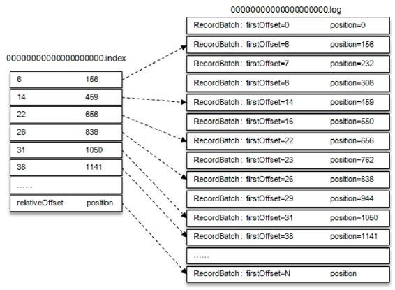

笔记-深入理解Kafka: 核心设计与实践原理¶
简单记下笔记
第一章 初识Kafka¶
首先知道他是啥:
- 消息系统: 就是一个消息队列系统, 作用无非就那几个-解耦, 削峰、异步, 然后再加上自己的集群特性, 做到可扩展、可恢复
- 持久化: log文件存消息
- 流式处理平台: 提供接口来做窗口、连接、变换和聚合等等的操作
1.1 基本概念¶
看下图就好:

- Producer : 生产者
- Broker : 就是 Kafka Server
- Consumer : 消费者
- Message.Topic: 消息是按Topic去分的
- Message.Topic.Partition : Topic 划分为不同的分区存储, 分区的数量、分配规则, 能通过配置文件进行配置, 同时还能在运行时, 动态修改创建主题时的分区数量（只能增, 不能减）、分配规则
- Message.Topic.Partition.Replicas: 分区时有副本的, 每个分区的副本数量, 分配规则也是跟上面一样, 可以静态设置, 动态修改
- AR( Assigned Replicas ), ISR (In-Sync Replicas), OSR (Out-Sync Replicas) => AR = ISR + OSR
- "Leader Replicas": 主副本, 负责读写
- "Follower Replica": 从副本, 负责记录猪副本数据, 有一定滞后性
- Message.Topic.Partition.Replica.LEO: 该分区下一条消息待写入的 Offset
- Message.Topic.Partition.Replica.HW: HW - 1 = 消费者能消费到的最大 Offset
- Message.Topic.Partition.Log : 在持久化层上可以把分区看成一个追加的 Log 文件
- Message.Topic.Partition.Offset : 指消息在分区中的一个偏移量, 且是分区中的唯一标识, 也就是 Kafka 是分区内有序的
1.2 安装和配置¶
3.x 版本安装比较简单, windows/linux 版本都是直接下个包, 在本地跑脚本就好了
1.3 生产和消费¶
这部分代码在后面的章节是会贴出来了, 这里就不再赘述了
1.4 服务端参数配置¶
这里贴出最常见的几个参数说明一下, 配置的内容都是在 config/server.properties 里面, 3.x 版本的话, 如果要用 kraft 的话, 则看 config/kraft/server.properties 文件
- process.roles : 进程的角色列表, 逗号分割, 默认: broker,controller
- node.id : 节点 id, 用来标识节点, 在日志可以用来排查问题
- listeners : broker 监听客户端的协议+地址+端口,格式为 : 协议://地址:端口, 协议值为: PLAINTEXT, SSL, SASL_SSL
- log.dirs : 持久化目录, log.dirs 优先级大于 log.dir
第二章 生产者¶
2.1 客户端开发¶
这里我先贴整体的代码, 然后再细说
package org.example.producer;
import org.apache.kafka.clients.producer.KafkaProducer;
import org.apache.kafka.clients.producer.ProducerConfig;
import org.apache.kafka.clients.producer.ProducerRecord;
import org.example.entity.UserProto;
import java.util.Properties;
public class KafkaProducerDemo {
public static final String BROKER_LIST = "localhost:19092,localhost:29092,localhost:39092";
public static final String TOPIC = "test";
public static Properties initConfig() {
Properties props = new Properties();
props.put(ProducerConfig.BOOTSTRAP_SERVERS_CONFIG, BROKER_LIST);
props.put(ProducerConfig.KEY_SERIALIZER_CLASS_CONFIG, "org.apache.kafka.common.serialization.StringSerializer");
props.put(ProducerConfig.VALUE_SERIALIZER_CLASS_CONFIG, KafkaProducerSerializer.class.getName());
props.put(ProducerConfig.CLIENT_ID_CONFIG, "producer.client.id.demo");
props.put(ProducerConfig.RETRIES_CONFIG, 10);
props.put(ProducerConfig.ACKS_CONFIG, "-1");
props.put(ProducerConfig.INTERCEPTOR_CLASSES_CONFIG, KafkaProducerInterceptor.class.getName());
return props;
}
public static void main(String[] args) {
Properties props = initConfig();
try (KafkaProducer<String, UserProto.User> producer = new KafkaProducer<>(props)) {
UserProto.User user = UserProto.User.newBuilder().setName("andrew").setSex(1).setCode("c1").build();
ProducerRecord<String, UserProto.User> record = new ProducerRecord<>(TOPIC, user);
producer.send(record);
} catch (Exception e) {
System.out.println(e.getMessage());
}
}
}
2.1.1 拦截器¶
ProducerInterceptor 接口是这样的
public interface ProducerInterceptor<K, V> extends Configurable, AutoCloseable {
ProducerRecord<K, V> onSend(ProducerRecord<K, V> var1);
void onAcknowledgement(RecordMetadata var1, Exception var2);
void close();
}
拦截器的注入方式是这样的, 源码用反射(getDeclaredConstructor().newInstance())去实例化对象
props.put(ProducerConfig.INTERCEPTOR_CLASSES_CONFIG, KafkaProducerInterceptor.class.getName());
以 kafka-client 3.7.0 为例
onSend 方法是在 KafkaProducer 源码 357 行执行的
public Future<RecordMetadata> send(ProducerRecord<K, V> record, Callback callback) {
ProducerRecord<K, V> interceptedRecord = this.interceptors.onSend(record);
return this.doSend(interceptedRecord, callback);
}
onAcknoledgement 则是在 703 行触发, 就是在 onComplete 的时候调用
public void onCompletion(RecordMetadata metadata, Exception exception) {
if (metadata == null) {
metadata = new RecordMetadata(this.topicPartition(), -1L, -1, -1L, -1, -1);
}
this.interceptors.onAcknowledgement(metadata, exception);
if (this.userCallback != null) {
this.userCallback.onCompletion(metadata, exception);
}
}
2.1.2 序列化器¶
StringSerializer 源码如下
package org.apache.kafka.common.serialization;
import java.io.UnsupportedEncodingException;
import java.nio.charset.StandardCharsets;
import java.util.Map;
import org.apache.kafka.common.errors.SerializationException;
public class StringSerializer implements Serializer<String> {
private String encoding;
public StringSerializer() {
this.encoding = StandardCharsets.UTF_8.name();
}
public void configure(Map<String, ?> configs, boolean isKey) {
String propertyName = isKey ? "key.serializer.encoding" : "value.serializer.encoding";
Object encodingValue = configs.get(propertyName);
if (encodingValue == null) {
encodingValue = configs.get("serializer.encoding");
}
if (encodingValue instanceof String) {
this.encoding = (String)encodingValue;
}
}
public byte[] serialize(String topic, String data) {
try {
return data == null ? null : data.getBytes(this.encoding);
} catch (UnsupportedEncodingException var4) {
throw new SerializationException("Error when serializing string to byte[] due to unsupported encoding " + this.encoding);
}
}
}
没啥特别, 就是 serialize 里返回了 string.getBytes() 自定义的也是一样, 返回 byte[] 就好, 反序列化道理一样
一般公司都是pb来弄序列化和反序列化的, 以下是我自己的demo代码, 十分简单
package org.example.producer;
import org.apache.kafka.common.serialization.Serializer;
import org.example.entity.UserProto;
public class KafkaProducerSerializer implements Serializer<UserProto.User> {
@Override
public byte[] serialize(String s, UserProto.User user) {
return user.toByteArray();
}
}
2.1.3 分区器¶
先看看源码定义
package org.apache.kafka.clients.producer;
import java.io.Closeable;
import org.apache.kafka.common.Cluster;
import org.apache.kafka.common.Configurable;
public interface Partitioner extends Configurable, Closeable {
int partition(String topic, Object key, byte[] keyBytes, Object value, byte[] valueBytes, Cluster cluster);
void close();
/** @deprecated */
@Deprecated
default void onNewBatch(String topic, Cluster cluster, int prevPartition) {
}
}
默认分区器 DefaultPartioner 源码是这样的
public int partition(String topic, Object key, byte[] keyBytes, Object value, byte[] valueBytes, Cluster cluster, int numPartitions) {
return keyBytes == null ? this.stickyPartitionCache.partition(topic, cluster) : BuiltInPartitioner.partitionForKey(keyBytes, numPartitions);
}
主要看key是否为空, 如果空的话调用 stickyPartitionCache.partition, 随机一个可用的分区来写入
非空就用内置分区器, 先用 Utils.murmur2 来 hash, 最后 % numPartitions
2.1.4 消息发送¶
发送模式有三种: 发后即忘(fire-and-forget)、 同步 (sync)、 异步(async), 其实 send 返回的是 Future 对象, 所以传参肯定有 Callback 的入参, 要同步模式的话, 直接 Future.get 即可。 这里讲讲增加可靠性的套路
注意: 提高可靠性会导致性能下降
props.put(ProducerConfig.RETRIES_CONFIG, 10); // 增加重试次数
props.put(ProducerConfig.ACKS_CONFIG, -1); // 确保所有副本有响应了才当成功
2.2 原理分析¶
2.2.1 整体架构¶
完整的发送流程图如下:

整体流程分两个线程完成, 一个主线程, 一个发送线程, 1-5 主线程完成
- 主线程通过 KafkaProducer 创建消息
- 看客户端有没有实现 ProducerIntercepter 这个接口, 如果有就对消息进行拦截处理, 一般拦截是为了对消息做简单处理, 因为太复杂会影响发送速度, 同时这玩意是可以链式编程的, 里面的 onSend() 在发送前触发, onAcknowleagement() 在 Selector 返回 Response 后马上触发？
- 对消息的 key, value 进行序列化操作, 要自定义, 就实现 org.apache.kafka.common.serlization.Seralizer 接口, configure() 配置当前类, serialize(String topic, T data) 就是序列化方法, 返回 byte[], close() 用来关闭序列化器
- 知道 Topic 了, 就得知道消息往哪个分区发了, 如果没有自定义分区器, 那么就用默认方法来确定发送的分区, 如果有就根据自定义的结果确定分区号
- 主线程把消息缓存到对应的 RecordAccumulator 中, 数据结构是 Map<Partiion, Deque\
- Sender 线程创建 Sender 对象, 把 RecordAccumulator.Map<Partiion, Deque\
.size() 来判断每个 Node 的负载情况
2.2.2 元数据更新¶
元数据指的是各个节点的基本信息, 包括节点地址、节点主题、节点的分区、分区 leader/follower 副本信息, AR/ISR, Controller 节点
上述的元数据是通过 Sender 线程来更新的, 更新步骤如下
1. 找出 leastLoadedNode (count 一下 InFlightRequests.Deque
2.3 重要的生产者参数¶
这些参数都是在创建 Producer 的时候放到 props 里面的
- ack:
= 1 表示 leader 副本成功写入, 就会收到来自服务端的写入成功响应, 数据有可能会丢
= 0 表示不用等服务端任何响应。速度最快是它了, 但它最容易丢数据
=-1 表示所有 ISR 成功写入才返回成功, 最大可靠性是它了
- max.request.size: 客户端能发送消息的最大值, 默认 1048576B=1M, 必须 <= broker.message.max.size
- retries: 生产者重试次数
- retry.backoff.ms : 重试之间的间隔, 默认 100
- compression.type: 消息压缩方式, 默认 none, 可以为 gzip snappy lz4
- connections.max.idle.ms: 每个限制连接最大存活时间
- linger.ms: 发送 ProducerBacth 之前等待更多消息的时间, 用来控制吞吐量的
- recieve.buffer.byte: 控制 Socket 接收缓冲区的大小, 默认值是 32768(B)=32KB
- send.buffer.byte: 控制 Socket 发送缓冲区的大小, 默认值是 131072(B)=128KB
第三章 消费者¶
3.1 消费者与消费组¶
看下图就知道大概意思了

消费者与消费组、分区的关系就以下几点:
- 消费者是以分区为单位进行消费
- 同一 Topic 下的消费组, 里面的消费者会均摊 Topic 内的 partition, 所以可能会出现 partition 不够分的情况
- 消费组内的消费者, 在消费同一 topic 下的消息, 显然只会消费一次, 相当于 p2p 模式
- 如果是不同组的消费者, 就相当于广播模式了
3.2 客户端开发¶
老规矩, 先把抄的代码贴出来
package org.example.consumer;
import org.apache.kafka.clients.consumer.ConsumerConfig;
import org.apache.kafka.clients.consumer.ConsumerRecord;
import org.apache.kafka.clients.consumer.ConsumerRecords;
import org.apache.kafka.clients.consumer.KafkaConsumer;
import org.example.entity.UserProto;
import java.time.Duration;
import java.util.HashMap;
import java.util.List;
import java.util.Map;
import java.util.concurrent.atomic.AtomicBoolean;
public class KafkaConsumerDemo {
public static final String BROKER_LIST = "localhost:19092,localhost:29092,localhost:39092";
public static final String TOPIC = "test";
private static final String GROUP_ID = "group.demo";
public static final AtomicBoolean IS_RUNNING = new AtomicBoolean(true);
public static Map<String, Object> initConfig() {
Map<String, Object> props = new HashMap<>();
props.put(ConsumerConfig.BOOTSTRAP_SERVERS_CONFIG, BROKER_LIST);
props.put(ConsumerConfig.KEY_DESERIALIZER_CLASS_CONFIG, "org.apache.kafka.common.serialization.StringDeserializer");
props.put(ConsumerConfig.VALUE_DESERIALIZER_CLASS_CONFIG, KafkaConsumerDeserializer.class.getName());
props.put(ConsumerConfig.CLIENT_ID_CONFIG, "producer.client.id.demo");
props.put(ConsumerConfig.GROUP_ID_CONFIG, GROUP_ID);
//额外功能
props.put(ConsumerConfig.INTERCEPTOR_CLASSES_CONFIG, KafkaConsumerInterceptor.class.getName());
return props;
}
public static void main(String[] args) {
try (KafkaConsumer<String, UserProto.User> consumer = new KafkaConsumer<>(initConfig())) {
consumer.subscribe(List.of(TOPIC));
while (IS_RUNNING.get()) {
ConsumerRecords<String, UserProto.User> records = consumer.poll(Duration.ofMillis(1000));
for (ConsumerRecord<String, UserProto.User> record : records) {
System.out.printf(" TOPIC = %s, partition = %s, offset = %s, key = %s, value = %s \n",
record.topic(), record.partition(), record.offset(), record.key(), record.value());
}
}
} catch (Exception e) {
System.out.println(e.getMessage());
}
}
}
3.2.1 必要的参数配置¶
一般都是那几个了, 有了生产者代码的经验之后, 瞄一下就好了, 还有就是生产上最好用 ConsumerConfig 的枚举, 自己写容易出错
- bootstrap.server: 连的 kafka.brokers 的列表
- group.id: 就是消费者组 id, 如果是空的, 会提示 To use the group management or offset commit APIs, you must provide a valid group.id in the consumer configuration. ( kafka-client v 3.7.0 )
- key.deserializer: key 的反序列化器, 跟生产者的 key.serializer 反过来就行
- value.deserializer: value 的反序列化器, 跟生产者的 value.serializer 反过来就行
3.2.2 KafkaConsumer 初始化源码¶
这部分干货, 原书没有的, 我是在找拦截器触发时机的时候看源码, 觉得挺有意思的, 捞出来给大家分享
KafkaConsumer 这个类其实是用了代理模式生成了实际执行的 KafkaConsumer 对象
public class KafkaConsumer<K, V> implements Consumer<K, V>{
KafkaConsumer(ConsumerConfig config, Deserializer<K> keyDeserializer, Deserializer<V> valueDeserializer) {
this.delegate = CREATOR.create(config, keyDeserializer, valueDeserializer);
}
KafkaConsumer(LogContext logContext, Time time, ConsumerConfig config, Deserializer<K> keyDeserializer, Deserializer<V> valueDeserializer, KafkaClient client, SubscriptionState subscriptions, ConsumerMetadata metadata, List<ConsumerPartitionAssignor> assignors) {
this.delegate = CREATOR.create(logContext, time, config, keyDeserializer, valueDeserializer, client, subscriptions, metadata, assignors);
}
}
里面根据 group.protocol 生成两种消费者对象, 一个是 AsyncKafkaConsumer, 一个是 legacyKafkaConsumer
public <K, V> ConsumerDelegate<K, V> create(ConsumerConfig config, Deserializer<K> keyDeserializer, Deserializer<V> valueDeserializer) {
try {
GroupProtocol groupProtocol = GroupProtocol.valueOf(config.getString("group.protocol").toUpperCase(Locale.ROOT));
return (ConsumerDelegate)(groupProtocol == GroupProtocol.CONSUMER ? new AsyncKafkaConsumer(config, keyDeserializer, valueDeserializer) : new LegacyKafkaConsumer(config, keyDeserializer, valueDeserializer));
} catch (KafkaException var5) {
throw var5;
} catch (Throwable var6) {
throw new KafkaException("Failed to construct Kafka consumer", var6);
}
}
3.2.4 订阅主题与分区¶
这一个章节主要讲的是 subsribe() 和 assign() 方法
主题订阅支持的模式:
- AUTO_TOPICS: 全名称匹配, 但是需要传主题数组做为传参,
- AUTO_PATTERN: 正则匹配模式
- USER_ASSIGNED: 用户分配模式, 分配指定 topic 下的 partition
主题订阅的时候可以传入再平衡的回调方法
3.2.5 消费者拦截器¶
跟原书顺序不一样, 我是按照代码执行顺序来讲的
拦截器的作用其实跟其他框架都一样, 都是给目标对象一个切面, 在触发某些事件/动作的前后插入一些自定义的方法, 先贴一下 ConsumerInterceptor 的接口源码
public interface ConsumerInterceptor<K, V> extends Configurable, AutoCloseable {
ConsumerRecords<K, V> onConsume(ConsumerRecords<K, V> var1);
void onCommit(Map<TopicPartition, OffsetAndMetadata> var1);
void close();
}
OnConsume 方法触发时机在 AsyncKafkaConsumer.poll()/LegacyKafakConsumer.poll() 中, 当执行了 pollForFethces 之后会返回 fetch 接着就执行 onConsume(fetch.records())
例子
package org.example.consumer;
import org.apache.kafka.clients.consumer.ConsumerInterceptor;
import org.apache.kafka.clients.consumer.ConsumerRecord;
import org.apache.kafka.clients.consumer.ConsumerRecords;
import org.apache.kafka.common.TopicPartition;
import java.util.ArrayList;
import java.util.HashMap;
import java.util.List;
import java.util.Map;
public class KafkaConsumerInterceptor implements ConsumerInterceptor<String, String> {
private static final long EXPIRE_INTERVAL = 10 * 1000;
@Override
public ConsumerRecords<String, String> onConsume(ConsumerRecords<String, String> records) {
long now = System.currentTimeMillis();
Map<TopicPartition, List<ConsumerRecord<String, String>>> newRecords = new HashMap<>();
for (TopicPartition tp : records.partitions()) {
List<ConsumerRecord<String, String>> list = records.records(tp);
List<ConsumerRecord<String, String>> filter = new ArrayList<>();
for (ConsumerRecord<String, String> i : list) {
if(now - i.timestamp() < EXPIRE_INTERVAL){
filter.add(i);
}
}
newRecords.put(tp, filter);
}
return new ConsumerRecords<>(newRecords);
}
@Override
public void close() {
}
@Override
public void onCommit(Map map) {
}
/**
* configure不是直接继承自Interceptor的
*
* @param map 配置map
*/
@Override
public void configure(Map<String, ?> map) {
}
}
3.2.6 反序列化¶
反序列化的话只需要继承 Deserializer 的 deserialize(String topic, byte[] data) 方法即可 一般生产都是用 ProtocalBuffer 去做序列化和反序列化的, 最简单的 demo 如下
package org.example.consumer;
import com.google.protobuf.InvalidProtocolBufferException;
import org.apache.kafka.common.serialization.Deserializer;
import org.example.entity.UserProto;
public class KafkaConsumerDeserializer implements Deserializer<UserProto.User> {
@Override
public UserProto.User deserialize(String topic, byte[] data) {
try {
return UserProto.User.parseFrom(data);
} catch (InvalidProtocolBufferException e) {
throw new RuntimeException(e);
}
}
}
3.2.7 消费消息¶
这一节主要讲的是 poll 方法
这个 poll() 方法是个轮训方法, 传参 Duration 是指拉去线程的最大阻塞时间(因为没有消息可能得等嘛)
然后返回的 ConsumerRecords 对象呢是可以迭代的
3.2.8 位移提交¶
这一节主要讲的是各个 offset 的区别以及提交 offset 的一些技巧
消费者在完成消费之后其实是需要提交 offset (告诉 broker 消费到哪里了)
offset 有三个概念
consumed offset = last consumed offset = position() = commited offset - 1
每次提交的都是下个消费的 offset
其实无论怎么提交位移量, 都存在着重复消费和消息丢失的风险
commit 分 sync 和 async, async 时有个回调方法, 是在 commit 完成后触发, 生产一般用于更改缓存/数据库中对应数据状态
降低上面两个风险的做法就是
- 自己手动提交, enable.auto.commit = false
- 提交 offset 需要有重试机制（可以在 finally 块中使用同步提交）, 防止提交失败 （但会有重复消费的风险）
- 自己做幂等性处理, 即使重复消费也不慌
3.2.9 控制或关闭消费¶
其实就是讲了 pause() / resume() / close() / wakeup() 方法
-
因为 idea 会提示创建 KafkaConsumer 实例建议用 try(resource) 创建, 所以可以优雅关闭 consumer
-
因为示例代码中的无限循环的判断条件是 running.get(), 所以也可以优雅退出循环
-
wakeup() 是通过抛出异常( WakeupException )来中断消费的, 所以要注意
3.2.10 指定位移消费¶
auto.offset.reset 粗粒度控制消费起始位置, consumer.seek()
-
seek() 方法可以指定从某个主题下的某个分区的 offfset 进行消费, 如果找不到位移, 就触发 auto.offset.reset
-
auto.offset.reset = earliest/latest/none
earliest 从 0 开始消费 latest 从分区末尾开始消费 none 找不到消费位移的时候就抛异常
-
可以通过 beginOffsets() / endOffsets() / seekToBegin() / seekToEnd() 找到头尾位置进行消费
-
可通过 consuemr.offsetForTimess( Map
3.2.11 再均衡¶
指的是分区所属权从一个消费者转移到另一个消费者的行为, 其实就是发生在消费者组发生变化的时候（组内成员有增减）, 应该怎么处理
- 再均衡发生期间, 相关的消费者是无法消费的（即对应消费者组内的消费者不可用）
- 分区重分配的时候, 当前消费者的状态会丢失, 其实就是A消费到一半的时候, 分区又给B消费, 如果消费位移没提交, 就可能重复消费
-
再均衡监听器有两个方法来规避这种问题
1) onPartitionsRevoke(Collcetion
) 消费者停止消费后, 重分配之前触发 (这里提交已消费完的 offset, 本地保存)
2) onPartitionsAssigned(partitions)
重分配之后, 消费者开始消费之前触发 (本地保存的 *offset* 找出来, 再 *seek* )
3.2.12 多线程实现¶
KafkaProducer 是线程安全的, KafkaConsumer 是线程不安全的, 这一节主要讲消费者如何多线程消费
注意, 如果生产中对消息的顺序性有要求, 不建议使用多线程消费同一分区的数据, 因为还得自己维护数据的有序性
实现方式分以下几种
- 线程封闭, 实例化多个 Consumer 对象进行消费
- 多线程消费同一个分区（不推荐）
- 包装 ThreadPool 和 Consumer, 把 poll() 到的 Record 扔到 ThreadPool 里面, 就是一个 Consumer 拉取某个主题, 多线程消费
第三个方案需要注意的是 offset 提交问题, 可以用滑窗/AQS去解决这个问题
3.2.13 重要的消费者参数¶
- fetch.min.bytes = 每次拉取最小数据量, 控制吞吐用的
- fetch.max.bytes = 每次拉取最大数据量, 消息大于该值也不会导致消息不可读
- fetch.max.wait.ms = 每次拉取最大等待时间, 也是控制吞吐, 具体看实际应用场景
- max.partition.fetch.bytes = 每个分区每次返回给 Consumer 的最大数据量, 指的是 fetch.bytes / partition_num
- max.poll.record = 拉取最大消息数, 默认500条
- connections.max.idle.ms = 多久之后关闭限制连接, 默认 540000 ms, 就是 9 min
- exclude.internal.topics = 是否屏蔽内部主题, 默认是 true, 表示不能用正则去订阅主题, false 则相反
- receives.buffer.bytes = 接收缓冲区大小, 默认 65536 B, 就是 64 KB
- send.buffer.size = 发送缓冲区大小, 默认 131072 B, 就是 128 KB
- request.timeout.ms = 等待请求响应的最长时间, 默认 30000 ms
- metadata.max.age.ms = 等待请求响应的最长时间, 默认 30000 ms
- reconnect.backoff.ms = 等待请求响应的最长时间, 默认 30000 ms
- retry.backo ms = 等待请求响应的最长时间, 默认 30000 ms
- isolation.level = 事务隔离等级, value = "read_uncommitted/read_commiitted", 默认是 read_uncommitted, 可以消费到 HW
第四章 主题与分区¶
4.1 主题的管理¶
主题管理可以用 kafka-topics.sh(bat) 来管理, 当然还能用 KafkaAdminClient 来实现。
4.1.1 创建主题¶
- 如果 auto.create.otpics.enable = true, 客户端(生产者/消费者)会在没有创建对应主题的下, 根据 num.partitions 和 default.replication.facotr 来创建主题, 命令如下
kafka-topics.sh --zookeeper <String : hosts> -create topic [String: topic] --partitions <分区数量> replication-factor <副本数量>
- replica-assignment 命令, 还能指定副本分配
## 假如 partition_num = 3, replica_nums = 2, 格式如下, 第一个是 *part1* 所在的 *broker*, 以此类推
--replica-assignment <brokerId1:brokerId2, brokerId2:brokerId3, brokerId3:brokerId1......>
分区同一 part 必须放在不同 broker 中, 否则会报异常
- --config 为指定 topic 设置参数
--config <key=value> --config <key=value>...
-
建完主题后, 它会在 dir.logs/dir.log 创下对应的主题和分区, 一般命名格式为 \<topic>-\<partition>
-
topic 具有唯一性
-
获取元数据信息就能知道主题、分区、配置情况, 如果是连了 zookeeper 的话, 则可以看节点信息获取这些情况
4.1.2 分区副本的创建¶
自动创建的原理
- 轮询 partition, 然后每次先随机个 startIndex, nextReplicaShift
- startIndex 算出第一个副本索引 firstReplicaIndex, 然后 brokerIds[index] 就是副本落到的broker了
- fristReplicaIndex, nextReplicaShift 作为传参, 又传到函数 prelicaIndex 里面, 得到第二个 index
- 循环操作
4.1.3 查看主题¶
describe 指令查看主题信息, 可额外增加 topics-with-overrides(覆盖默认配置的主题), under-replicated-partitions(查找失效副本), unavailable-partitions(查找不可用副本)
4.1.4 修改主题¶
基本用 kafka-configs.sh 中的 alert 方法来修改主题, 不支持减少分区
4.1.5 配置管理¶
基本讲 kafka-configs.sh 脚本的用法
example : 删除某个 topic 下的配置
kafka-configs.sh --zookeeper <zk地址> --alter --entity-type topics --entity-name topic-config --delete-config
cleanup.policy,max.message.bytes
4.1.6 主题端参数¶
格式: 主题端参数 - 对应 broker 的参数 = 释义
cleanup.policy - log.cleanup.policy = 日志压缩策略, 默认 delete, 可为 compact
compression.type - compression.type = 压缩类型, 默认 producer, 保留为生产者使用的原始压缩, 可为 uncompressed/snappy/gzip/lz4
delete.retention.ms - log.cleaner.delete.retention.ms = 标记为删除的数据保留的时间, 默认86400000, 就是一天
file.delete.delay.ms - log.segment.delete.delay.ms = 清理文件前等待的时间, 默认60000, 即1分钟
flush.message - log.flush.interval.messages = 需要收集多少数据才强制刷盘, 默认由操作系统决定, 不建议更改, 值为 Long.MAX_VALUE
flush.ms - log.flush.interval.ms = 需要等待多久才强制落盘, 默认也是操作系统决定
follower.replication.throttled - follower.replication.throttled = 配置被限制速率的主题所以对应的 follower 副本列表
index.interval.bytes - log.index.interval.bytes = 控制添加索引的频率, 默认 4096, 消息字节数超过这个值就会创建索引
leader.replication.throttled - leader.replication.throttled = 配置被限制速率的主题所以对应的 leader 副本列表 .....
4.1.7 删除主题¶
kafka-topics.sh 脚本操作的话就是这样的
kafka-topics.sh --zookeeper <zk地址> --delete --topic topic-delete
zkCli.sh 操作是这样的
rmr /config/topics/<topic-name>
delete /brokers/topics/<topic-name>
4.1.8 zk 节点信息速查¶
/brokers/topics/
4.2 初识 KafkaAdminClient¶
4.2.1 Kafka 基本使用¶
基本功能如下
- 创建主题: CreateTopicsResult createTopics(Collection
topics) - 删除主题: DeleteTopicsResult deleteTopics(Collection
topics) - 列出所有可用的主题: ListTopicsResult listTopics()
- 查看主题信息: DescribeConfigsResult describeTopics(Collection
topicNames) - 查询配置信息: DescribeConfigsResult describeConfigs(Collection
resources) - 修改配置信息: AlertConfigsResult alterConfigs(Map
- 增加分区: CreatePartitionsResult createPartitions(Map
演示代码如下
package org.example.admin;
import org.apache.kafka.clients.admin.*;
import org.apache.kafka.common.config.ConfigResource;
import java.util.Collection;
import java.util.HashMap;
import java.util.List;
import java.util.Map;
public class MyAdminClient {
private static final String BROKER_LIST = "localhost:19092";
private static final String TOPIC = "DELETE_TOPIC";
private static final String DELETE_TOPIC = "topic-demo";
public static void main(String[] args) {
Map<String, Object> map = new HashMap<>();
map.put(AdminClientConfig.BOOTSTRAP_SERVERS_CONFIG, BROKER_LIST);
map.put(AdminClientConfig.REQUEST_TIMEOUT_MS_CONFIG, 30000);
map.put(AdminClientConfig.CLIENT_ID_CONFIG, "admin.client");
try (AdminClient client = AdminClient.create(map)) {
createTopic(client);
listAllTopics(client);
deleteTopic(client);
describeConfig(client);
alterConfig(client);
} catch (Exception e) {
System.out.println(e.getMessage());
}
}
private static void listAllTopics(AdminClient client) throws Exception {
ListTopicsResult result = client.listTopics();
for (TopicListing tl : result.listings().get()) {
System.out.println(tl.toString());
}
}
private static void createTopic(AdminClient adminClient) throws Exception {
adminClient.createTopics(List.of(new NewTopic(TOPIC, 3, (short) 3))).all().get();
}
private static void deleteTopic(AdminClient adminClient) throws Exception {
adminClient.deleteTopics(List.of(DELETE_TOPIC)).all().get();
}
private static void describeConfig(AdminClient adminClient) throws Exception {
ConfigResource resource = new ConfigResource(ConfigResource.Type.TOPIC, TOPIC);
System.out.println(adminClient.describeConfigs(List.of(resource)).all().get().get(resource));
}
private static void alterConfig(AdminClient adminClient) throws Exception {
ConfigResource resource = new ConfigResource(ConfigResource.Type.TOPIC, TOPIC);
ConfigEntry entry = new ConfigEntry("cleanup.policy", "compact");
AlterConfigOp config = new AlterConfigOp(entry, AlterConfigOp.OpType.SET);
Map<ConfigResource, Collection<AlterConfigOp>> configs = new HashMap<>();
configs.put(resource, List.of(config));
System.out.println(adminClient.incrementalAlterConfigs(configs).all().get());
}
}
4.2.2 主题合法性验证¶
- 生产环境中的 auto.create.topics.enable 一般是 false, 所以只能用脚本或者 KafkaAdmin 创建主题
- 校验合法性的关键参数是 create.topic.policy.class.name, 默认为 null, 然后自己实现 org.apache.kafka.server.policy.CreateTopicPolicy 接口就行, 最后在 config/server.properties 配好这个配置就行
- 主题合法性校验一般是校验创建的主题中其他参数如 partition/replicas-num 等等, 反正这个接口入参是 metadata 来的, 拿出来用就得了
4.3 分区的管理¶
4.3.1 优先副本的选举¶
使用场景: 在 leader 挂掉之后, 可能需要执行的操作
目的: 为了防止 broker 集群负载失衡
具体做法:
1. 利用 auto.leader.rebalance.enable=true, Kafka 控制器会创建定时器来计算不平衡率, 如果超过 leader.imbalance.per.broker.percentage, 就会自动执行有限副本的选举, 执行周期为 leader.imbalance.checke.ientrval.seconds (默认300s), 缺点是不可控, 也有可能会有性能问题, 引起客户端阻塞 2. 利用 kafka-perferred-replica-election.sh 来手动执行, 如果分区数目多, 性能有影响 3. 利用 json 文件来对部分主题下的部分分区执行副本优先选举的操作
4.3.2 分区重分配¶
使用场景: 新加入的 broker 不会分配旧分区, 只能分配新主题的分区, 所以需要重新分配分区副本
目的: 防止分区失衡
具体做法:
- 用 "kafka-reassign-partition.sh --generate --topics-to-move-json-file 文件名 --broker-list 节点数字" 这个命令来导出重分配方案, 存成json文件
- 用 "kafka-reassign-partition.sh --execute --reassignment-json-file 上面的文件" 这个命令来执行重分配方案, 上一步到处是方便手动更改
4.3.3 复制限流¶
发生时机: 分区重分配的时候, 就是副本在节点之间复制的时候
目的: 降低因重分配时带来的性能削减
具体做法:
- 用 kafka-config.sh + follower.replication.throttled.rate 和 leader.replication.throttled.rate 设置, 单位是 B/s
- 用 in/kafka-reassign-partitions.sh --zookeeper localhost:2181/kafka --verify --reassignment-json-file project.json 查看进度
4.3.4 修改副本因子¶
使用场景: 创建主题的时候填错副本因子数/运行后想提高可靠性以及容错性
具体做法:
- 用 kafka-reassign-partition.sh --generate --topics-to-move-json-file 文件名 --broker-list 节点数字 来导出当前分配方案
- 文本修改, 修改的 json 节点是 replicas 以及 log_dirs
4.4 如何选择合适的分区数¶
看下面的标题就知道怎么选了
4.4.1 性能测试工具¶
- 生产者用 kafka-producer-perf-test.sh --topic topic-1 --num-records 1000000 --record-size 1024 --throughput 100 --producer-props bootstrap.servers=localhost:9092 acks=1
throughput = 0 不限流, 当前限流 100 bytes
- 消费者用 kafka-consumer-perf-test.sh --topic topic-1 --messages 1000000 --broker-list localhost:9092, 方法跟上面一样
4.4.2 分区数越多吞吐量就越高吗¶
明细不是, 会有峰值, 看图好像是 50 个分区的时候性能最佳
4.4.3 分区数的上限¶
跟文件描述符相关, 再多其实也没用
4.4.4 考量因素¶
看菜吃饭得了, 分区可以设为节点数的倍数, 分区一来均衡, 二来可靠
第5章 日志存储¶
5.1 文件目录布局¶
直接看图就得了, 根目录下的日志文件夹命名规则是 \<topic>-\<partition>

5.2 日志格式的演变¶
朝着内容压缩, 属性扩展的方向演变
5.2.1 v0版本¶
十分基础的设计, 只能说该有的都有了
大概抄一下字段的解释
- crc32 (4B) : crc32 校验, 校验 magic - value
- magic (1B) : 消息格式版本号, v0 = 0, v1 = 1, v2 = 2
- attribute (1B) : 消息属性, 低3位压缩类型: 0 没有压缩 /1 GZIP /2 SNAPPY /3 LZ4
- key lenght (4B) : 消息 key 长度, -1 表示没有 key
- key : 可选字段
- value length (4B) : 值长度, -1 表示消息为空, 人称墓碑消息
- value : 消息体
5.2.2 v1版本¶
- attribute (1B) : 消息属性, 低3位压缩类型: 0 没有压缩 /1 GZIP /2 SNAPPY /3 LZ4, 第四位 0 表示 timestamp 类型为 CreateTime, 而1表示timestamp 类型为 LogAppendTime, 其他位保留
- timestamp (8B) : 时间戳, 表示哪种时间看上面的属性
5.2.3 消息压缩¶
- 分两层消息, 叫做外层消息和内层消息
- 外层消息的 offset = absolute offset = 内层消息的最后一条消息
- 找内层消息的 absolute offset 很简单, 就是外层的 offset 减内层的 offset
压缩情况的时间戳含义又有区别, 解析如下
外层消息的timestamp设置为:
-
如果timestamp类型是CreateTime, 那么设置的是内层消息中最大的时间戳。
-
如果timestamp类型是LogAppendTime, 那么设置的是Kafka服务器当前的时间戳。
内层消息的timestamp设置为:
-
如果外层消息的timestamp类型是CreateTime, 那么设置的是生产者创建消息时的时间戳。
-
如果外层消息的timestamp类型是LogAppendTime, 那么所有内层消息的时间戳都会被忽略。
5.2.4 变长字段¶
Kafka 3.x 的消息格式只支持这个消息格式, 且这个版本多了 Varints 和 ZigZag 编码
-
ZigZag 编码的算法比较简答, sint32 的编码 => (n << 1) ^ (n >> 31), sint64 的则是 (n << 1) ^ (n >> 63), 主要的作用是压缩负数编码长度
-
Varints 表示方法: 每个字节都有一个位于最高位的 msb 位（most significant bit）, 除最后一个字节外, 其余 msb 位都设置为1, 最后一个字节的 msb 位为0, Varints 中采用的是小端字节序, 即最小的字节放在最前面, 这个表示法可能会让部分数字的编码长度变大
-
算法流程如下
假设为65 => 0100 0001
先 *ZigZag* => 1000 0010 ^ 0000 0000 = 1000 0010
因为低7位有效, 所以补位变成 000 0001 000 0010
低位在前, 000 0010 000 0001, 最后补个 *msb*, 变成 1000 0010 0000 0001
5.2.5 v2版本¶
v2版本
-
length: 消息总长度。
-
attributes: 弃用, 但还是在消息格式中占据1B的大小, 以备未来的格式扩展。
-
timestamp delta: 时间戳增量。通常一个 timestamp 需要占用8个字节, 如果像这里一样保存与 RecordBatch 的起始时间戳的差值, 则可以进一步节省占用的字节数。
-
offset delta: 位移增量。保存与 RecordBatch 起始位移的差值, 可以节省占用的字节数。
-
headers: 这个字段用来支持应用级别的扩展, 而不需要像 v0 和 v1 版本一样不得不将一些应用级别的属性值嵌入消息体。Header 的格式如图5-7最右部分所示, 包含 key 和 value, 一个 Record 里面可以包含0至多个 Header。
-
first offset: 表示当前 RecordBatch 的起始位移。
-
length: 计算从 partition leader epoch 字段开始到末尾的长度。
-
partition leader epoch: 分区 leader 纪元, 可以看作分区 leader 的版本号或更新次数, 详细内容请参考8.1.4节。
-
magic: 消息格式的版本号, 对v2版本而言, magic 等于2。
-
attributes: 消息属性, 注意这里占用了两个字节。低3位表示压缩格式, 可以参考 v0 和 v1 ；第4位表示时间戳类型；第5位表示此 RecordBatch 是否处于事务中, 0表示非事务, 1表示事务。第6位表示是否是控制消息（ControlBatch）, 0表示非控制消息, 而1表示是控制消息, 控制消息用来支持事务功能, 详细内容请参考7.4节。
-
last offset delta: RecordBatch 中最后一个 Record 的 offset 与 first offset 的差值。主要被 broker 用来确保 RecordBatch 中 Record 组装的正确性。
-
first timestamp: RecordBatch 中第一条 Record 的时间戳。
-
max timestamp: RecordBatch 中最大的时间戳, 一般情况下是指最后一个 Record 的时间戳, 和 last offset delta 的作用一样, 用来确保消息组装的正确性。
-
producer id: PID, 用来支持幂等和事务, 详细内容请参考7.4节。
-
producer epoch: 和 producer id 一样, 用来支持幂等和事务, 详细内容请参考7.4节。
-
first sequence: 和 producer id、producer epoch 一样, 用来支持幂等和事务, 详细内容请参考7.4节。
-
records count: RecordBatch 中 Record 的个数。
5.3 日志索引¶
主要讲 .index 文件和 .timeindex, .index 文件是通过消息偏移量找消息, .timeindex 则是根据指定时间戳找时间
- 首先, 每当写入的消息量 > log.index.interval.bytes, 就会新增索引项
- 符合以下其中一个条件, 日志文件都会切分
- 日志分段文件 > broker 中的 log.segment.bytes (默认1073741824, 1 GB)
- 系统当前时间 - 日志分段消息最大时间戳 > log.roll.ms/log.roll.hours, 此处 log.roll.ms 优先级大点 (默认只设置 log.roll.hours = 7)
- .index 文件大小 or .timeindex 文件大小 > log.index.size.max.bytes (默认 10485760=10 MB)
- 追加消息 offset - baseOffset > Integer.MAX
5.3.1 偏移量索引¶
8 * 16 = 4 * 32 刚好 int32, 前8后8看就得了
前4个字节表示相对偏移量, 后4个字节表示消息在日志分段文件对应的物理位置
查找方法: 二分法 + 跳表

偏移量索引示意图
跳表查找偏移量所在的日志分段, 计算相对偏移量, 最后再用前面图的方法, 就可以找到消息
5.3.2 时间戳索引¶
64字节 + 32字节
-
将 targetTimeStamp 和每个日志分段中的最大时间戳largestTimeStamp逐一对比，直到找到不小于 targetTimeStamp 的 largestTimeStamp 所对应的日志分段。日志分段中的largestTimeStamp的计算是先查询该日志分段所对应的时间戳索引文件，找到最后一条索引项，若最后一条索引项的时间戳字段值大于0，则取其值，否则取该日志分段的最近修改时间。
-
找到相应的日志分段之后，在时间戳索引文件中使用二分查找算法查找到不大于targetTimeStamp的最大索引项，即[1526384718283，28]，如此便找到了一个相对偏移量28。
-
在偏移量索引文件中使用二分算法查找到不大于28的最大索引项，即[26，838]。
-
从步骤1中找到日志分段文件中的838的物理位置开始查找不小于targetTimeStamp的消息。
5.4 日志清理¶
日志清理策略有2, 日志删除和日志压缩, 通过 log.cleanup.policy 进行设置, 默认是 delete, 可以同时支持两种策略。删除策略是根据一定规则去删数据, 而压缩则是同一个 key 下保留最新值
5.4.1 日志删除¶
- 基于时间: 通过broker端参数 log.retention.hours、log.retention.minutes 和 log.retention.ms 来配置, 优先级粒度越小越大, 默认值 7 天, 只设置小时
- 基于日志大小: 根据 log.retention.bytes 进行设置, 指的是总大小, 默认 1073741824，即 1GB
- 基于日志起始偏移量: 通过 DeleteRecordsRequest 请求, 然后判断日志分段的起始偏移量是否小于 logStartOffset
5.4.2 日志压缩¶
- 日志压缩跟 Redis 的 RDB 模式有点像, 可以提高起始加载的速度
- clener-offset-checkpoint 文件会把 log 文件分为 clean 和 dirty 两部分(文件记录的是 firstDirytOffset), 如果客户端能赶上 dirty 部分, 就 能读到日志所有消息了
- 清理时 broker 会开线程来清, 开多少 log.cleaner.thread 决定
- 污浊率决定日志文件清理的优先级, 计算公式 dirtyRatio = dirtyBytes / (cleanBytes + dirtyBytes), 可以通过 log.cleaner.min.cleanable.ratio 控制触发压缩的起始比例
- __consumer_offsets 也是用日志压缩策略进行保存的
- 清理算法很简单, 用一个 SkimpyOffsetMap 记录 key 和 offset, 遍历两次 log, 第一次记录最大的 offset, 第二次开始删除
- 墓碑日志 (key != null && value == null) 清理时机 = 该日志分段的 lastModifiedTime + deleteHorizonMs (broker 的 log.cleaner.delete.retention.ms, 默认86400000, 即24小时) < clean 区域的 lastModifiedTime
- 为防止 compact 出现碎片，每次 compact 会把多个文件分成一组, 每组文件大小不超过 log.segment.bytes
- 每个日志分组清理后会变成 log.clean 文件, 继续 compact 就变成 log.swap, 最后删除原来日志, log.swap 就去掉 swap 后缀, 完成压缩
5.5 磁盘存储¶
讲述 Kafka 在落盘时候的优化
5.5.1 页缓存¶
Kafka 使用了大量页缓存, 先把数据写到页缓存, 然后再根据配置 fsync 异步落盘, 落盘可以用 log.flush.interval.messages、log.flush.interval.ms 控制
5.5.2 磁盘 I/O 流程¶
· 写操作：用户调用fwrite把数据写入C库标准IObuffer后就返回，即写操作通常是异步操作；数据写入C库标准IObuffer后，不会立即刷新到磁盘，会将多次小数据量相邻写操作先缓存起来合并，最终调用write函数一次性写入（或者将大块数据分解多次write 调用）页缓存；数据到达页缓存后也不会立即刷新到磁盘，内核有 pdflush 线程在不停地检测脏页，判断是否要写回到磁盘，如果是则发起磁盘I/O请求。
· 读操作：用户调用fread到C库标准IObuffer中读取数据，如果成功则返回，否则继续；到页缓存中读取数据，如果成功则返回，否则继续；发起 I/O 请求，读取数据后缓存buffer和C库标准IObuffer并返回。可以看出，读操作是同步请求。
· I/O请求处理：通用块层根据I/O请求构造一个或多个bio结构并提交给调度层；调度器将 bio 结构进行排序和合并组织成队列且确保读写操作尽可能理想：将一个或多个进程的读操作合并到一起读，将一个或多个进程的写操作合并到一起写，尽可能变随机为顺序（因为随机读写比顺序读写要慢），读必须优先满足，而写也不能等太久。
I/O 调度分以下几种 1. NOOP: 简单的FIFO队列 2. CFQ: 按照I/O请求的地址进行排序, 每个进程单独创建一个队列来管理该进程所产生的请求, 根据时间片去调度，但有可能会饿死 3. DEADLINE: 除了CFQ本身具有的I/O排序队列，DEADLINE额外分别为读I/O和写I/O提供了FIFO队列。读FIFO队列的最大等待时间为500ms，写FIFO队列的最大等待时间为5s, READ > WRITE > CFQ 4. ANTICIPATORY: 在DEADLINE的基础上，为每个读I/O都设置了6ms的等待时间窗口。如果在6ms内OS收到了相邻位置的读I/O请求，就可以立即满足。ANTICIPATORY算法通过增加等待时间来获得更高的性能，假设一个块设备只有一个物理查找磁头（例如一个单独的SATA硬盘），将多个随机的小写入流合并成一个大写入流（相当于将随机读写变顺序读写），通过这个原理来使用读取/写入的延时换取最大的读取/写入吞吐量。适用于大多数环境，特别是读取/写入较多的环境。
5.5.3 零拷贝¶
对 Linux 操作系统而言，零拷贝技术依赖于底层的 sendfile() 方法实现。对应于 Java 语言，FileChannal.transferTo() 方法的底层实现就是sendfile() 方法